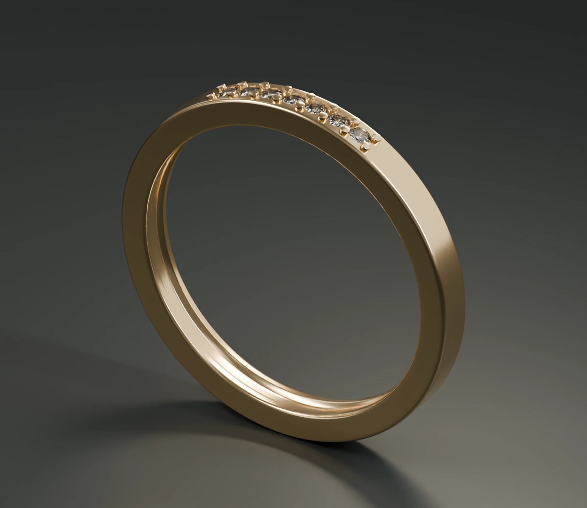

Загружается модель…
Кольцо-дорожка
Семь круглых фианитов повторяют изгиб тёплого золота. Между соседними камнями остаётся узкая полоска света. В 3D можно поднять весь ряд и увидеть отдельное опорное гнездо под каждой вставкой.
- Размер и ширина шинки
- Ø 17,00 × 2,20 мм
- Круглые вставки
- 7 × Ø 1,20 мм
- Зазор между камнями
- 0,199 мм
- Корнеры до обжима
- 16 × Ø 0,53 мм
- Расчётная масса металла
- 585 · 2,44 г
750 · 2,80 г
В комплекте исходник Rhino 8 с телами Brep, STL металла и семи камней, сборка GLB и результаты контроля. Заготовка для согласования с закрепщиком.